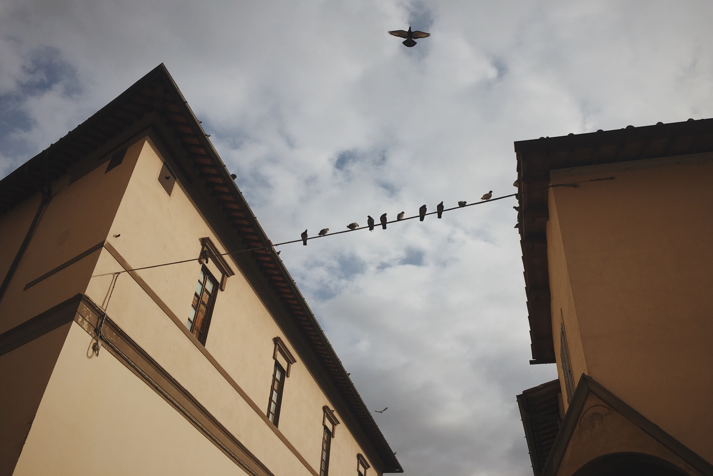

A TIME ABROAD
Traveling can cure the soul. I was fortunate enough to study abroad in Florence, Italy where I spent a full semester immersed in the Florentine culture where the language is proper yet raw, the food is anything but ordinary and the people are downright welcoming.
The essential things to do in Florence include a visit to the trifecta and dime of the city- Il Duomo, Il Camponile and Il Baptistero. The most popular art museum is the Uffizi, which is not to be missed. If the line is too long, take a walk to Pane e Toscana for the most delicious panino you will ever eat. Admire the small medieval roads of the city where cobblestone dominates the curvy pathways. Watch the sunset on the Ponte Vecchio after a delicious meal at Cucineria La Mattonaia and a gelato at Gelateria de'Medici.
After, then maybe you'll understand my love for this amazing city.